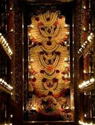
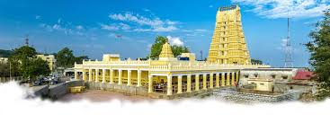
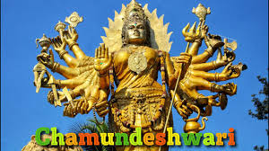

Kukke Subramanya Temple


Location: Subramanya, Dakshina Kannada district, Karnataka
Deity: Lord Subramanya (Kartikeya/Murugan), worshipped with Vasuki (serpent)
Significance: Known for sarpa dosha remedies and Naga Pratistha rituals
Mythology: Lord Subramanya gave refuge to Vasuki and defeated the demon Tarakasura here.
Unique Feature: Lord is worshipped with serpent god Vasuki under one idol.
Rituals: Sarpa Samskara and Ashlesha Bali are widely performed.
Scenic Surroundings: Nestled in the lush Western Ghats with rivers and greenery.
Festivals: Subramanya Shasti and Nagara Panchami are major events.
Chamundeshwari Temple


Location: Chamundi Hills, near Mysuru (Mysore), Karnataka
Deity: Goddess Chamundeshwari (form of Durga/Parvati)
Significance: One of the 18 Maha Shakti Peethas; Guardian deity of Mysuru royal family
Mythology: Goddess Chamundi killed the demon Mahishasura here—Mysuru is named after him.
Architecture: Dravidian style with a prominent seven-tiered gopuram.
Iconic Features: Huge statue of Mahishasura and a massive Nandi bull en route.
Festivals: Dasara (Navaratri) is celebrated with grandeur and royal processions.
Accessibility: 1,000 steps lead to the temple, or road access is available.